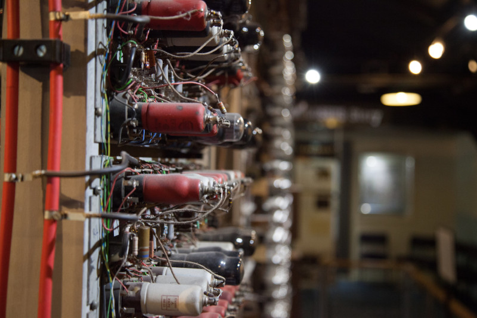
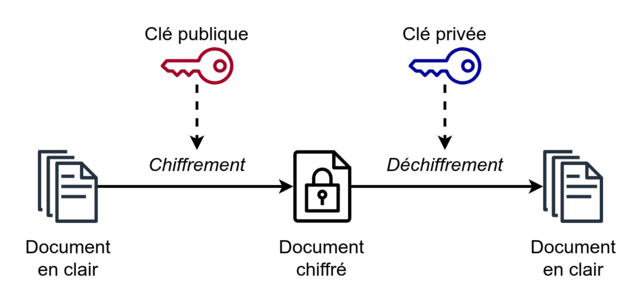

C1-ALGO-10 - Introduction à la cryptologie
Contents

C1-ALGO-10 - Introduction à la cryptologie#
Cryptologie = cryptographie + cryptanalyse
Objectifs#
connaître le contexte historique et l’émergence de l’informatique
connaître les deux axes de la cryptologie:
la cryptographie
la cryptanalyse
comprendre les deux types de cryptographie:
symétrique
assymétrique
appliquer les concepts sur un exercice de cryptographie symétrique
déduire les enjeux sociaux de la cryptologie
Durée : 2 périodes
La cryptographie c’est quoi ?#
La cryptographie est l’une des deux branches de la cryptologie (l’autre étant la cryptanalyse), la science du secret. La cryprographie s’attache aux techniques permettant de protéger des messages en les rendant illisibles à un éventuel attaquant qui ne connaîtrait pas le secret.
Le terme cryptographie a pour origine deux mots du Grec ancien : crypto qui signifie caché et graphein qui signifie écrire. C’est donc la science des écritures cachées.
Le but de la cryptographie est donc d’assurer la sécurité des communications transmises sur un canal public en présence d’adversaires.

Dans le monde de la cryptographie, on utilise souvent des personnages fictifs :
Alice qui souhaite envoyer un message à
Bob pendant que
Mallaury, le méchant, essaie de le décrypter

On a donc trois briques de base dans la cryptographie :
un texte clair
un texte chiffré (ou texte caché)
un secret qui permet de passer de l’un à l’autre
La cryptanalyse c’est quoi ?#
La cryptanalyse est l’ensemble des techniques, méthodes et algorithmes qui permettent de retrouver le texte clair à partir du texte chiffré sans connaissance du secret
Quelques repères historiques#
Depuis l’Antiquité, les humains ont cherché à protéger leurs communications. Les raisons étaients militaires, sociales ou même économiques.
Dans l’Antiquité#
~XVIème siècle avant JC : premier document chiffré : une tablette d’argile retrouvée en Irak sur laquelle un potier avait inscrit sa recette secrète en supprimant les consonnes et en modifiant l’orthographe de certains mots
~VIIème siècle avant JC : la technique dite Grecque. Les Grecs utilisaient une scytale (ou bâton de Plutarque), soit un morceau de bois sur lequel s’enroule une bandelette de cuir ou de papier et sur lequel on écrit un texte. En le déroulant, le message devient incompréhensible

~Vème siècle avant JC : les Hébreux utilisent une cryptographie par substitution : elle consiste à remplacer chaque lettre du texte clair par une autre lettre de l’alphabet : A devient Z, B devient Y, etc..
Ier siècle avant JC : Le code de César. Chaque lettre du texte clair est remplacée par une lettre décalée sur l’alphabet. Cette méthode est facilement cassable par une analyse de fréquence, mais les Romains comptaient sur le faible taux d’alphabétisation de l’Empire (ou de la République) pour garder les secrets.
Du Moyen-Âge à la première guerre mondiale#
Durant cette longue période, le taux d’alphabétisation augmente et les techniques de chiffrement se perfectionnent. On citera
IXème siècle : le savant arabe Al-Kindi décrit pour la première fois la technique de l’analyse de fréquence comme méthode de cassage
1467 : le savant Italien Leon Battista Alberti expose pour la première fois le chiffrement polyalphabétique : chaque lettre du texte clair est remplacée par une autre de l’alphabet et changer plusieurs fois l’alphabet de substitution à l’aide d’un disque à chiffrer. Cette méthode rend caduque l’analyse de fréquence
1586 : le chiffre de Vigenère du nom d’un diplomate français est une technique qui permet de chiffrer un texte clair à l’aide d’une clef (un secret sous la forme d’un mot) par substitution polyalphabétique (un tableau 2D des lettres de l’alphabet) qui peut produire la même lettre chiffrée à partir de deux lettres claires distinctes
XIXème siècle : l’arrivée du télégraphe (d’abord optique dit de Chappe puis à impulsions électriques) ont rendu la cryptographie au premier plan.
1883 : le Hollandais Auguste Kerckhoffs publie un ouvrage resté célèbre La cryptographie militaire avec la règle toujours en vigueur aujourd’hui : la sécurité d’un système ne doit pas reposer sur le secret de la méthode de chiffrement
Première guerre mondiale#
La première guerre mondiale est la victoire de la cryptanalyse sur la cryptographie. Les techniques de chiffrement étaient en place et les méthodes mathématiques permettant de les déchiffrer ont été améliorées. Les communications sont instantanées (radio) mais le déchiffrement, effectué à la main, est extrêmement lent.
Le Télégramme Zimmermann : Envoyé par l’Allemagne à son ambassade au Mexique et lui demandant de se mettre en contact avec le gouvernement mexicain en vue d’une alliance contre les USA. C’est ce télégramme qui a accéléré l’entrée en guerre des Etats-Uniens. Il était chiffré à l’aide d’une clef privée et par substitution.

Seconde guerre mondiale#
La seconde guerre mondiale voit arriver les machines de cryptographie évoluées, mécanique ou électromécaniques comme la célèbre machine Enigma. Elle voit surtout arriver des machines qui permettent d’effectuer de la cryptanalyse : ce sont les premiers ORDINATEURS.
La machine Enigma : Chaque lettre est remplacée par une autre mais la substitution change d’une lettre à l’autre. Lorsqu’on appuie sur une touche de la machine, un circuit électrique est formé en passant dans des rotors. Le système est à la fois simple et complexe. Avec un même secret (une clef), on peut chiffrer et déchiffrer un message. La clef de chiffrement est transmise en début de message et est valable 24 heures. Il faut donc 24 heures pour déchiffrer un message, sinon celui-ci devient caduque.

La bombe : afin de tester un maximum de combinaisons possibles, les Polonais ont mis en place une machine électromécanique en 1938 : la bomba kryptologiczna conçue par Marian Rejewski. Six bombes ont été construites et étaient capables de tester des milliers de combinaisons par minute ainsi que sélectionner des solutions viables. Les Polonais étaient capables de déchiffrer des messages des premières machines Enigma (avec 3 rotors). Mais dès la guerre déclarée (invasion de la Pologne), l’Allemagne nazie avait modifié ses procédures de cryptographie (en envoyant plus la clef en préambule).
La bombe de Turing : Construite par les Britanniques dans le complexe ultra-secret de Bletchley Park au Nord de Londres, elle fonctionnait sur le même principe que la machine polonaise mais avec une performance bien plus élevée. C’est le nom d’Alan Turing qui est resté mais il n’était pas le seul. Le groupe secret - le Government Code and Cypher School - était composé de centaines d’employés : des analystes, des interpréteurs, des traducteurs, des mathématiciens. On estime que les travaux de déchiffrement d’Enigma ont raccourci la seconde guerre mondiale de 2 ans.

Période moderne#
1949 : débuts de la cryptographie à clef publique par le mathématicien Claude Shannon
Années 1970: les ordinateurs permettent des avancées dans le domaine avec le Standard de Chiffrement Public (DES et AES), l’échange de clefs publiques, le chiffrement assymétrique.
1980 arrivée des fonctions de hachage (comme MD5) qui associent à n’importe quel texte une suite de données de taille arbitraire et dont la propriété principale est qu’elle n’est pas réversible. Ces fonctions de hachages permettent notamment de vérifier l’intégrité d’un message (à savoir qu’il n’a pas été modifié durant sa transmission), ou de vérifier la validité d’un mot de passe.
Caractéristiques de la cryptographie#
Confidentialité : garantir qu’un message n’est pas accessible par un tiers
Intégrité : garantir que le contenu n’a pas été modifié
Authentification : garantir l’identité à l’origine d’un message
Cryptographie symétrique#
Définition#
La cryptographie symétrique (ou cryptographie à clef secrète) permet de chiffrer et de déchiffrer un message avec le même secret.
La clef secrète#
La clef secrète est l’élément principal de la cryptographie symétrique. Il s’agit d’une donnée qui est traitée par un algorithme et qui ne doit être connue que par l’émetteur et le destinataire d’un message.
Principe de Kerckhoffs#

Auguste Kirckhoffs est un cryptologue militaire des Pays-Bas. En 1883, il publie un livre intitulé la cryptographie militaire qui fait toujours référence aujourd’hui. Ce livre traite des caractéristiques que devrait avoir un système sûr de niveau militaire. Dans le chapitre II (page 8 de la traduction, voir Références), il cite ainsi les 6 caractéristiques :
Le système doit être matériellement, sinon mathématiquement indéchiffrable
Il faut qu’il n’exige pas le secret, et qu’il puisse sans inconvénient tomber dans les mains de l’ennemi
La clef doit pouvoir en être communiquée et retenue sans le secours de notes écrites, et être échangée ou modifiée au gré des correspondants
Il faut qu’il soit applicable à la correspondance télégraphique
Il faut qu’il soit portatif, et que son maniement ou son fonctionnement n’exige pas le concours de plusieurs personnes
Enfin, il est nécessaire, vu les circonstances qui en commande l’application, que le système soit d’un usage facile, ne demandant ni tension de l’esprit, ni la connaissance d’une longue série de règles à observer
L’algorithme qui régit la cryptographie symétrique doit respecter l’ensemble des caractéristiques du principe de Kirckhoffs.
Principaux algorithmes symétriques modernes#
AES (Advanced Encryption Standard)
DES (Data Encryption Standard) démontré depuis les années 1990 cassable.
Cryptographie asymétrique#

La cryptographie asymétrique permet de chiffrer et de déchiffrer un message avec deux clefs distinctes.
La première : la clef publique permet le chiffrement
La seconde : la clef privée qui permet le déchiffrement
Les deux clefs sont créées par le destinataire.
L’analogie du coffre-fort#
Cette analogie, bien que simpliste, permet de comprendre le concept de cryptographie asymétrique.
Alice a choisi un coffre-fort dont elle seule possède la clef
Alice envoie le coffre-fort ouvert à Bob
Bob le reçoit et y place son message
Bob ferme le coffre-fort
Bob envoie le coffre-fort fermé à Alice
Alice le reçoit et ouvre son coffre-fort pour lire le message
Principe de base : comment cela peut fonctionner ?#
La cryptographie asymétrique fonctionne sur le principe mathématique des fonctions à sens unique et des trappes secrètes. Les premières sont des fonctions telles qu’une fois appliquées, il est très difficile de retrouver le point de départ (le message clair). Les secondes permettent à ceux qui ont conçu la fonction à sens unique de déchiffrer le message grâce à un élément qu’il possède (la clef privée).
L’une des principales fonctions à sens unique utilisée dans les algorithmes asymétriques est celle de la factorisation d’un nombre entier : étant donné deux nombres premiers (très grands) \(p\) et \(q\), il est extrêmement facile de calculer \(z = p \cdot q\). Connaissant \(z\), il est extrêmement difficile de retrouver \(p\) et \(q\). Le célèbre algorithme RSA est construit sur cette fonction.
Chiffrement et déchiffrement#
Le système de clefs publique et privée permet de coder des chiffres. Mais il est relativement facile de créer un système de conversion de lettres en chiffres et qui permet de chiffrer n’importe quel caractère.
Utilisations majeures#
La confidentialité des messages reçus. L’expéditeur est certain que seul le récepteur du message peut le déchiffrer avec sa clef publique
Dans l’autre sens, on peut utiliser la clef privée pour chiffrer un message. Le récepteur peut utiliser la clef publique pour vérifier l’autenticité du message. Il s’agit de l’authentification
Exemples d’algorithmes asymétriques#
RSA (Rivest, Shamir et Adelman du nom de leurs concepteurs)
DSA (Digital Signature Algorithm)
Les mots de passe : fonction de hachage cryptographique#
Lorsqu’on utilise un mot de passe, celui-ci est par définition secret. Même si le système sur lequel on se connecte (par exemple eduvaud.ch ) peut être de très grande confiance, il ne doit jamais stocker l’ensemble de ces mots de passe dans un fichier. C’est un point de faiblesse majeur si ce fichier est divulgué.
Pour éviter ce problème, on recourt aux fonctions de hachage cryptographique. Une telle fonction associe à une donnée de taille arbitraire (par exemple un mot de passe), une image (une suite de caractères ou de bits) de taille fixe et dont la propriété essentielle est qu’il est pratiquement impossible à inverser; c’est-à-dire de retrouver la donnée initiale en fonction de l’image. La fonction de hachage possède les caractéristiques suivantes :
elle est déterministe (la même donnée initiale donnera toujours la même image),
l’image se calcule facilement,
il est impossible de retrouver la donnée à partir de l’image et
il est impossible de trouver deux messages différents ayant la même image
Exemples d’algorithmes de hachage#
MD5
Md5sum
SHA
Cryptanalyse#
La cryptanalyse est la science du cassage de secret. Il s’agit de l’ensemble des méthodes et techniques qui consistent à retrouver un texte clair à partir du texte chiffré. Les principales méthodes de cassage sont les suivantes :
Force brute#
La force brute consiste à tester l’ensemble des combinaisons, une à une. C’est l’attaque la plus simple en terme algorithmique, mais la plus coûteuse en terme de complexité.
Attaque par dictionnaire#
L’attaque par dictionnaire consiste à tester la validité d’une clef sur la base d’un dictionnaire, c’est-à-dire d’un ensemble de clefs potentielles.
Le logiciel à sources ouvertes John The Ripper est un logiciel de cassage de mots de passes qui utilise l’attaque par dictionnaire.
Analyse fréquentielle#
L’attaque par analyse fréquentielle examine la fréquence d’apparition de lettres employées dans un texte chiffré et à la comparer avec les fréquences d’apparition des lettres dans une langue donnée.
Références pour aller plus loin#
National Security Agency, The Zimmermann Telegram, Cryptology Quarterly, online sur le site de la NSA
Auguste Kerckhoffs (1835-1903). La cryptographie militaire, Journal des sciences militaires, vol. IX, p. 5-38, janvier 1883. Une version est disponible sur la bibliothèque de Google
Jean-Philippe Javet, cours de mathématiques pour le gymnase de Morges, chapitre sur la cryptographie